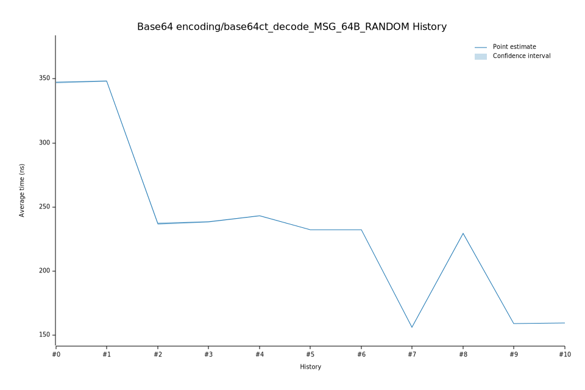

# 42023-02-09T13:20:20Z
|
Lower Bound |
Estimate |
Upper Bound |
| Value: |
242.61ns |
242.99ns |
243.31ns |
| Change in Value: |
+1.6766% |
+1.9253% |
+2.1727% |
No change in performance detected.
# 32023-02-08T19:28:12Z
|
Lower Bound |
Estimate |
Upper Bound |
| Value: |
237.85ns |
238.35ns |
238.90ns |
| Change in Value: |
+0.5799% |
+0.9996% |
+1.3882% |
No change in performance detected.
# 22022-12-05T09:15:42Z
|
Lower Bound |
Estimate |
Upper Bound |
| Value: |
236.02ns |
237.10ns |
238.16ns |
| Change in Value: |
-32.749% |
-32.465% |
-32.199% |
No change in performance detected.
# 12022-11-14T12:31:16Z
|
Lower Bound |
Estimate |
Upper Bound |
| Value: |
347.70ns |
348.29ns |
348.87ns |
| Change in Value: |
+0.3819% |
+0.6809% |
+0.9915% |
No change in performance detected.
# 02022-11-04T14:07:42Z
|
Lower Bound |
Estimate |
Upper Bound |
| Value: |
346.46ns |
347.18ns |
347.92ns |